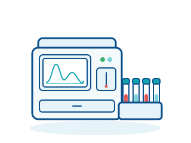

Laboratory diagnostics · Device 5 of 28
Haematology analyser
Automated counting and differentiation of blood cells
A haematology analyser counts and classifies the cells in the blood and produces a full blood count, with or without differential, within minutes. It is part of the basic equipment of almost every medical laboratory.

How it works
The instrument aspirates a small volume of EDTA-anticoagulated whole blood and dilutes the sample automatically. The cells are then passed one by one through a narrow aperture or flow cell. Each cell generates a signal that is counted and evaluated.
Two measurement principles are common: in impedance counting, every cell changes the electrical resistance across the aperture, from which the number and size of the cells are derived. In optical flow cytometry, the cells are illuminated by a laser beam; scattered light and fluorescence provide information about cell size, internal structure and cell type.
Haemoglobin is measured photometrically after the red blood cells have been lysed. From the raw data the software calculates parameters such as haematocrit, mean cell volume (MCV) and the distribution of white blood cells (differential count). Abnormal results are flagged so that staff can review them under the microscope.
Areas of use
- Routine laboratories in hospitals and joint practice laboratories
- General practitioner and specialist practices with in-house laboratories
- Emergency departments and intensive care units (point of care)
- Oncology and haematology for therapy monitoring
- Blood donation services and preventive check-ups
At a glance
- Risk class (MDR/IVDR)
- In-vitro diagnostic device under the IVDR (not the MDR); the analyser itself is usually class A, reagents and tests depend on design
- Typical settings
- Central laboratory, practice laboratory, emergency department
- Space requirement
- Benchtop unit; large systems as floor-standing units connected to a laboratory automation line
- Typical service life
- Usually 7–10 years, depending on workload and maintenance
What to look for when procuring
- Clarify the daily sample volume: compact 3-part differential instruments are sufficient for practices, whereas hospitals usually need 5-part differential systems with higher throughput and reticulocyte measurement.
- Check the connection to your laboratory information system (LIS) via HL7 or ASTM and whether bidirectional communication for order download is supported.
- Calculate the running costs for reagents, control material and calibrators – over the service life these often exceed the purchase price.
- Agree on a service contract with guaranteed response times and clarify whether a loan instrument is provided during longer outages.
- Take into account national quality-assurance requirements for internal quality control and external proficiency testing (in Germany: Rili-BÄK) and plan staff training in accordance with operator obligations (in Germany: MPBetreibV).
Key terms
- Differential count
- Breakdown of white blood cells into their subgroups (e.g. neutrophils, lymphocytes, monocytes). A 3-part diff distinguishes three, a 5-part diff five cell populations.
- Impedance counting
- Counting principle in which each cell briefly increases the electrical resistance as it passes through an aperture; the height of the pulse corresponds to the cell size.
- EDTA blood
- Whole blood mixed with the anticoagulant EDTA so that the cells remain individually suspended for analysis.
Planning to acquire a device like this?
We give independent, vendor-neutral advice, compare quotations and support you through the procurement process.
Request a consultation